Assessing environmental extrapolation
Here we show how to assess extrapolation (in environmental space), using the the continuous Shape metric (Velazco et al. 2024).
Load required packages
Import data and clean
New names:
Rows: 133161 Columns: 11
── Column specification
──────────────────────────────────────────────────────── Delimiter: "," chr
(2): node, dates dbl (7): ...1, lat, lon, height, accuracy, heading, speed dttm
(2): timestamp, DateTime
ℹ Use `spec()` to retrieve the full column specification for this data. ℹ
Specify the column types or set `show_col_types = FALSE` to quiet this message.
• `` -> `...1`Code
# remove individuals that have poor data quality or less than about 3 months of data.
# The "2014.GPS_COMPACT copy.csv" string is a duplicate of ID 2024, so we exclude it
buffalo_data <- buffalo_data %>% filter(!node %in% c("2014.GPS_COMPACT copy.csv",
2029, 2043, 2265, 2284, 2346))
buffalo_data <- buffalo_data %>%
group_by(node) %>%
arrange(DateTime, .by_group = T) %>%
distinct(DateTime, .keep_all = T) %>%
arrange(node) %>%
mutate(ID = node)
buffalo_clean <- buffalo_data[, c(12, 2, 4, 3)]
colnames(buffalo_clean) <- c("id", "time", "lon", "lat")
attr(buffalo_clean$time, "tzone") <- "Australia/Queensland"
buffalo_clean$sex <- "f"
buffalo_clean$life_stage <- "adult"
head(buffalo_clean)[1] "Australia/Queensland"Create a step object
Use the amt package to create a trajectory object from the cleaned data.
Plot the data spatially
Code

Creating a step object
Create steps
Warning: There were 14 warnings in `mutate()`.
The first warning was:
ℹ In argument: `steps = map(...)`.
Caused by warning in `steps.track_xyt()`:
! burst's are ignored, use steps_by_burst instead.
ℹ Run `dplyr::last_dplyr_warnings()` to see the 13 remaining warnings.Create steps
# unnest the data after creating 'steps' objects
buffalo_all_steps <- buffalo_all_nested_steps %>%
amt::select(id, steps) %>%
amt::unnest(cols = steps)
buffalo_all_steps <- buffalo_all_steps %>%
mutate(t2_rounded = round_date(t2_, "hour"), # round the time to the nearest hour
hour_t2 = ifelse(hour(t2_rounded) == 0, 24, hour(t2_rounded))) # change the 0 hour to 24
head(buffalo_all_steps, 10)Fitting step length and turning angle distributions
Fitting exponential and von Mises distributions to the steps of ALL individuals (only one Gamma and one von Mises distribution for the whole population). This should be done when fitting a hierarchical model to update the ‘population’ parameters, but also makes it straightforward to update after model fitting to each individual separately.
Fit step length and turning angle distributions
# fitting step length and turning angle distributions to all locations
gamma_dist <- fit_distr(buffalo_all_steps$sl_, "gamma")
vonmises_dist <- fit_distr(buffalo_all_steps$ta_, "vonmises")
# checking parameters - which can then be saved to update movement parameters
# after fitting the step selection model
gamma_dist$params$shape[1] 0.4266711[1] 664.0039[1] 0.1990268Circular Data:
Type = angles
Units = radians
Template = none
Modulo = asis
Zero = 0
Rotation = counter
[1] 0For some reason, the random_steps function does not work when using the bursted_steps_xyt class. I’m not sure why (the error is Error in bursts[[i]] : subscript out of bounds), but it works when that class label is removed, and appears to sample random steps correctly. For taxa that have irregular fixes and many bursts, this may be worth exploring in more detail.
Plotting the random step distributions
Spatially plot the used and random steps, with the used steps in red.
Plot the random steps
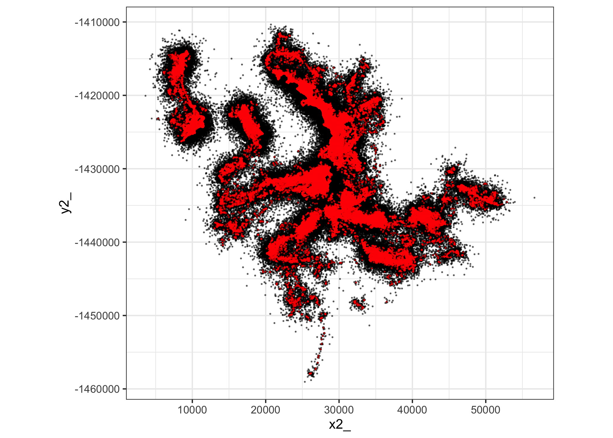
Import spatial covariates
Although NDVI changes over time, and we have access to monthly layers, we will just select a single month here.
Code
# NDVI
# ndvi <- terra::rast("mapping/large_files/NDVI_2023_250m.tif")
# ndvi <- terra::project(ndvi, "EPSG:3112")
# writeRaster(ndvi, "mapping/large_files/NDVI_2023_250m_projected3112.tif", overwrite = TRUE)
ndvi <- terra::rast("mapping/large_files/NDVI_2023_250m_projected3112.tif")
plot(ndvi, main = "NDVI July 2023")
points(buffalo_all$x_, buffalo_all$y_, col = "red", pch = 16, cex = 0.5)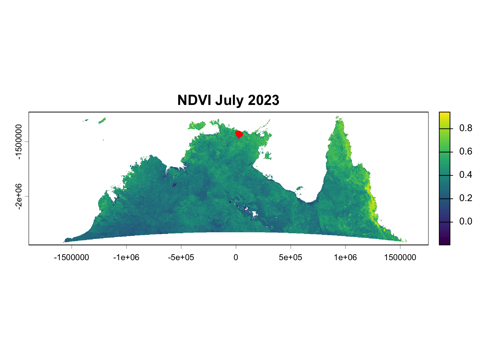
Code
# elevation
# elev <- terra::rast("mapping/large_files/DEM_SRTM_250m.tif")
# elev <- terra::project(elev, "EPSG:3112")
# writeRaster(elev, "mapping/large_files/DEM_SRTM_250m_projected3112.tif", overwrite = TRUE)
elev <- terra::rast("mapping/large_files/DEM_SRTM_250m_projected3112.tif")
plot(elev, main = "Elevation")
points(buffalo_all$x_, buffalo_all$y_, col = "red", pch = 16, cex = 0.5)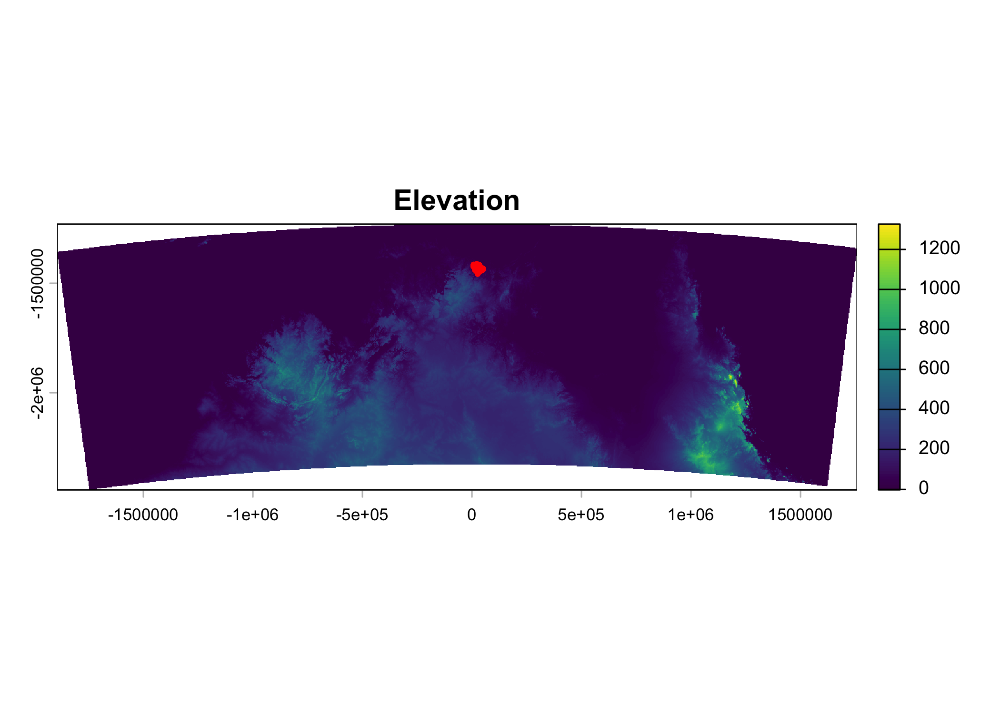
Code
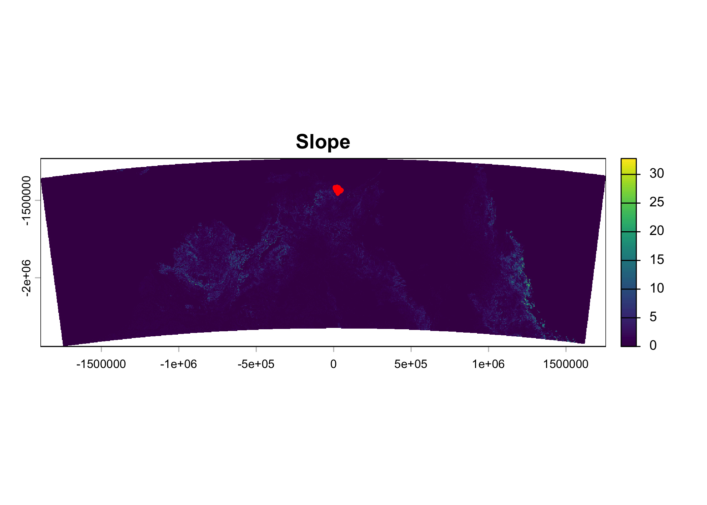
Sample values of the environmental covariates at the end of the steps.
Extract covariates at the end of the steps
Assess extrapolation
Code
# uncomment to run the code - takes a while
# tic()
#
# extrapolation_raster <- extra_eval(
# training_data = buffalo_parametric_popn_covs,
# pr_ab = "y",
# projection_data = c(ndvi, elev, slope),
# metric = "mahalanobis",
# univar_comb = FALSE,
# aggreg_factor = 10
# )
#
# beep(sound = 2)
#
# toc()Write the raster
Mask out NAs and plot
Add Shape values back to the training dataframe
Code
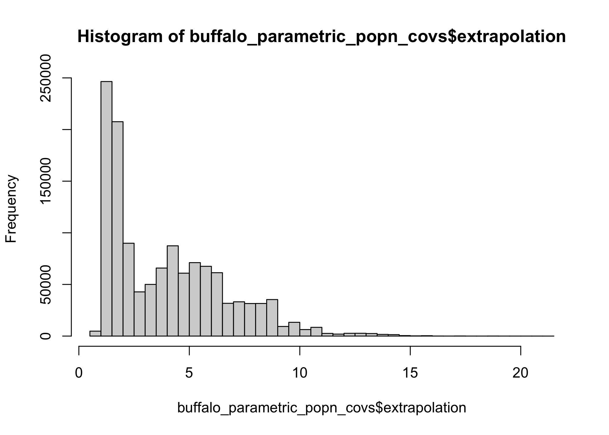
Code
[1] "The 99th percentile of the Shape values in the training data is 11.8537864685059"Code
[1] "The maximum Shape value in the training data is 21.1267185211182"Plot histogram of Shape values in the training data with the 99th percentile and maximum values indicated
Code
ggplot() +
geom_histogram(data = buffalo_parametric_popn_covs, aes(x = extrapolation),
fill = "orange", colour = "black", bins = 30) +
geom_vline(xintercept = threshold_q99, color = "red", linetype = "dashed") +
geom_vline(xintercept = threshold_max, color = "red", linetype = "dashed") +
labs(x = "Extrapolation (Shape)", y = "Frequency") +
theme_bw()Warning: Removed 63 rows containing non-finite outside the scale range
(`stat_bin()`).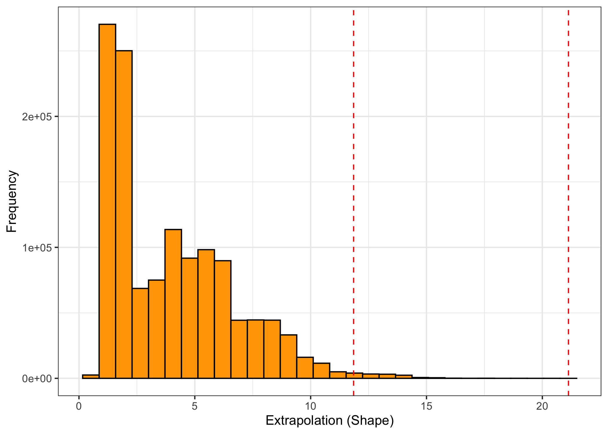
Plot the extrapolation
Create dataframe
Code
|---------|---------|---------|---------|
=========================================
Thin the training data
Code
buffalo_parametric_popn_covs_thin <- buffalo_parametric_popn_covs %>% dplyr::slice_sample(prop = 1)
# project to WGS84 for plotting with ggplot
xy_wgs84 <- buffalo_parametric_popn_covs_thin %>%
st_as_sf(coords = c("x1_", "y1_"), crs = 3112) %>%
st_transform(crs = 4326) %>%
st_coordinates() %>%
as.data.frame() %>%
rename(x1_wgs84 = X, y1_wgs84 = Y)
buffalo_parametric_popn_covs_thin <- buffalo_parametric_popn_covs_thin %>%
bind_cols(xy_wgs84) Plot with ggplot
Code
raster_alpha <- 0.5
training_points_alpha <- 0.1
extrapolation_aus_plot <- ggplot(data = extrapolation_raster_wgs84_agg_df, aes(x = x, y = y, fill = extrapolation)) +
geom_raster() +
scale_fill_viridis_c(
na.value = "transparent",
transform = "log1p",
breaks = c(1, 10, 100, 1000, 5000)
) +
geom_contour(aes(z = extrapolation),
breaks = c(threshold_max), color = "orange", linewidth = 0.2) +
geom_point(data = buffalo_parametric_popn_covs_thin,
aes(x = x1_wgs84, y = y1_wgs84),
colour = "red", alpha = training_points_alpha, size = 0.01) +
annotation_scale(location = "bl", width_hint = 0.2) +
coord_sf(crs = 4326, default_crs = 4326, expand = FALSE) +
labs(x = NULL, y = NULL, fill = "Extrapolation\n(Shape)") +
theme_classic() +
theme(
legend.position = "inside",
legend.position.inside = c(0.95, 0.7)
)
extrapolation_aus_plotWarning: The following aesthetics were dropped during statistical transformation: fill.
ℹ This can happen when ggplot fails to infer the correct grouping structure in
the data.
ℹ Did you forget to specify a `group` aesthetic or to convert a numerical
variable into a factor?Warning: Raster pixels are placed at uneven horizontal intervals and will be shifted
ℹ Consider using `geom_tile()` instead.`geom_raster()` only works with linear coordinate systems, not `coord_sf()`.
ℹ Falling back to drawing as `geom_rect()`.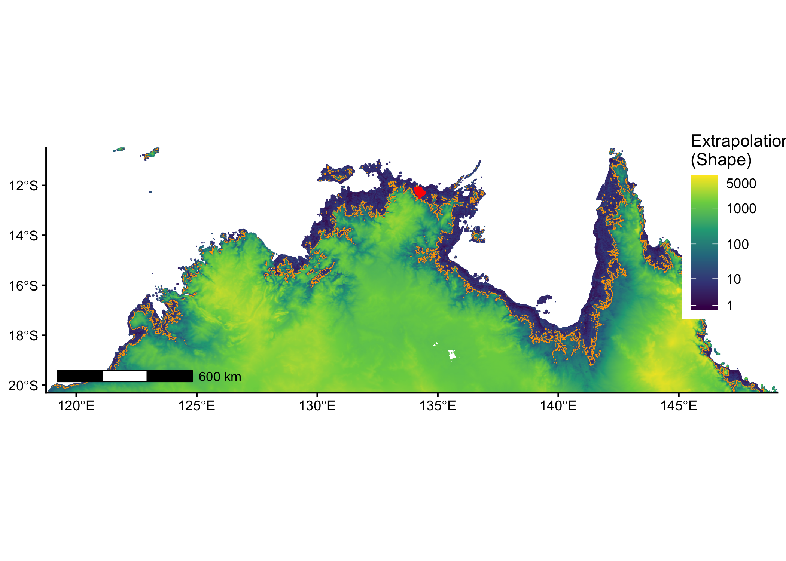
Code
Warning: The following aesthetics were dropped during statistical transformation: fill.
ℹ This can happen when ggplot fails to infer the correct grouping structure in
the data.
ℹ Did you forget to specify a `group` aesthetic or to convert a numerical
variable into a factor?
Raster pixels are placed at uneven horizontal intervals and will be shifted
ℹ Consider using `geom_tile()` instead.`geom_raster()` only works with linear coordinate systems, not `coord_sf()`.
ℹ Falling back to drawing as `geom_rect()`.Check distributions of covariates against Shape values
Plot NDVI and elevation with Shape values
Code
ndvi_elev_plot <- ggplot() +
geom_point(data = cov_extrap_stack_df_thin,
aes(x = NDVI, y = elevation, colour = extrapolation), alpha = raster_alpha) +
geom_point(data = buffalo_parametric_popn_covs_thin,
aes(x = NDVI, y = elevation),
colour = "red", alpha = training_points_alpha) +
scale_colour_viridis_c(
transform = "log1p",
breaks = c(1, 10, 100, 1000, 5000)
) +
labs(x = "NDVI", y = "Elevation", colour = "Extrapolation\n(Shape)") +
theme_classic() +
theme(legend.position = "none")
ndvi_elev_plotWarning: Removed 63 rows containing missing values or values outside the scale range
(`geom_point()`).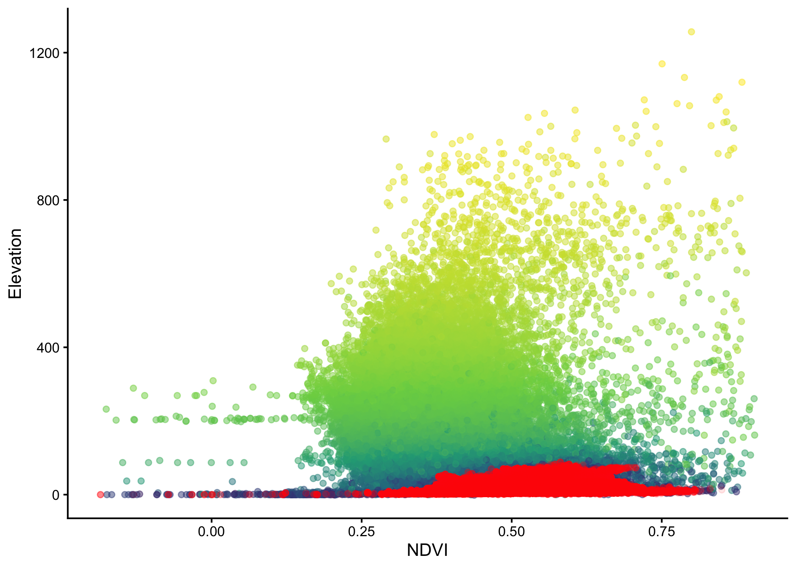
Plot NDVI and slope with Shape values
Code
ndvi_slope_plot <- ggplot() +
geom_point(data = cov_extrap_stack_df_thin,
aes(x = NDVI, y = slope, colour = extrapolation), alpha = raster_alpha) +
geom_point(data = buffalo_parametric_popn_covs_thin,
aes(x = NDVI, y = slope),
colour = "red", alpha = training_points_alpha) +
scale_colour_viridis_c(
transform = "log1p",
breaks = c(1, 10, 100, 1000, 5000)
) +
labs(x = "NDVI", y = "Slope", colour = "Extrapolation\n(Shape)") +
theme_classic() +
theme(legend.position = "none")
ndvi_slope_plotWarning: Removed 63 rows containing missing values or values outside the scale range
(`geom_point()`).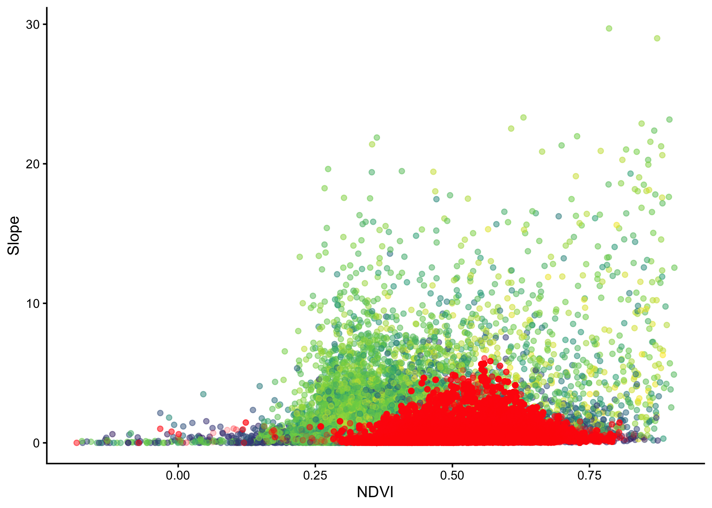
Plot elevation and slope with Shape values
Code
elev_slope_plot <- ggplot() +
geom_point(data = cov_extrap_stack_df_thin,
aes(x = elevation, y = slope, colour = extrapolation), alpha = raster_alpha) +
geom_point(data = buffalo_parametric_popn_covs_thin,
aes(x = elevation, y = slope),
colour = "red", alpha = training_points_alpha) +
scale_colour_viridis_c(
transform = "log1p",
breaks = c(1, 10, 100, 1000, 5000)
) +
labs(x = "Elevation", y = "Slope", colour = "Extrapolation\n(Shape)") +
theme_classic() +
theme(legend.position = "none")
elev_slope_plot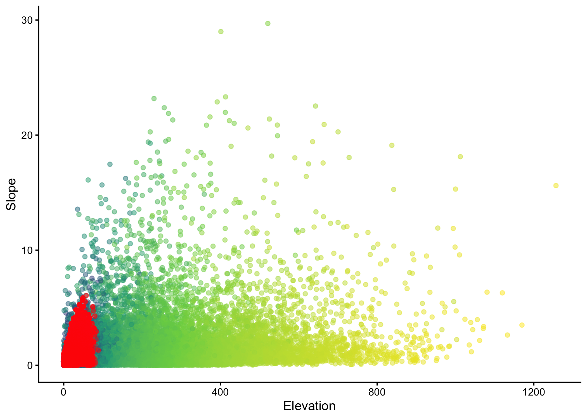
Combine the plots
Code
Warning: The following aesthetics were dropped during statistical transformation: fill.
ℹ This can happen when ggplot fails to infer the correct grouping structure in
the data.
ℹ Did you forget to specify a `group` aesthetic or to convert a numerical
variable into a factor?Warning: Raster pixels are placed at uneven horizontal intervals and will be shifted
ℹ Consider using `geom_tile()` instead.`geom_raster()` only works with linear coordinate systems, not `coord_sf()`.
ℹ Falling back to drawing as `geom_rect()`.Warning: Removed 63 rows containing missing values or values outside the scale range
(`geom_point()`).Warning: Removed 63 rows containing missing values or values outside the scale range
(`geom_point()`).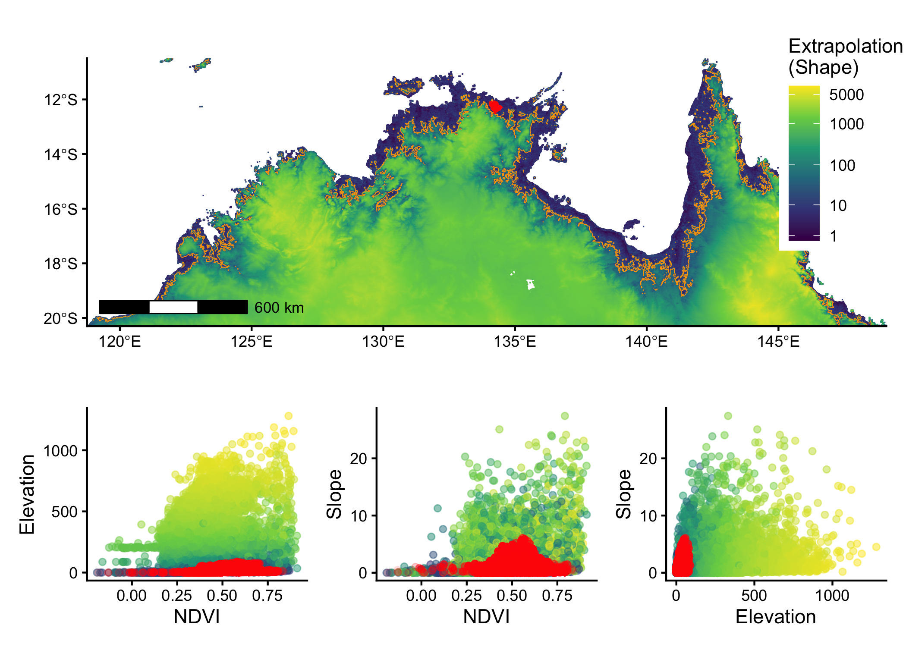
Code
Warning: The following aesthetics were dropped during statistical transformation: fill.
ℹ This can happen when ggplot fails to infer the correct grouping structure in
the data.
ℹ Did you forget to specify a `group` aesthetic or to convert a numerical
variable into a factor?Warning: Raster pixels are placed at uneven horizontal intervals and will be shifted
ℹ Consider using `geom_tile()` instead.`geom_raster()` only works with linear coordinate systems, not `coord_sf()`.
ℹ Falling back to drawing as `geom_rect()`.Warning: Removed 63 rows containing missing values or values outside the scale range
(`geom_point()`).Warning: Removed 63 rows containing missing values or values outside the scale range
(`geom_point()`).Create zoomed plot for earlier figure
Crop spatial covariates
Code
# set the extent
zoom_extent_min_x <- min(buffalo_parametric_popn_covs_thin$x1_) - 20000
zoom_extent_max_x <- max(buffalo_parametric_popn_covs_thin$x1_) + 120000
zoom_extent_min_y <- min(buffalo_parametric_popn_covs_thin$y1_) - 50000
zoom_extent_max_y <- max(buffalo_parametric_popn_covs_thin$y1_) + 20000
# create extent
crop_extent <- terra::ext(
zoom_extent_min_x,
zoom_extent_max_x,
zoom_extent_min_y,
zoom_extent_max_y
)
ndvi_crop <- terra::crop(ndvi, crop_extent)
elev_crop <- terra::crop(elev, crop_extent)
slope_crop <- terra::crop(slope, crop_extent)Assess extrapolation
Code
# commented out here as it takes about 45 minutes to run
# tic()
#
# extrapolation_raster_crop <- extra_eval(
# training_data = buffalo_parametric_popn_covs,
# pr_ab = "y",
# projection_data = c(ndvi_crop, elev_crop, slope_crop),
# metric = "mahalanobis",
# univar_comb = FALSE,
# aggreg_factor = 1
# )
#
# beep(sound = 2)
#
# toc()
# terra::writeRaster(extrapolation_raster_crop, "outputs/extrapolation_raster_crop.tif", overwrite = TRUE)
extrapolation_raster_crop <- terra::rast("outputs/extrapolation_raster_crop.tif")Code
# mask and create dataframe for plotting
extrapolation_raster_crop <- terra::mask(extrapolation_raster_crop, ndvi_crop)
extrapolation_raster_cropped_df <- as.data.frame(extrapolation_raster_crop, xy = TRUE)
# plot with ggplot
ggplot(data = extrapolation_raster_cropped_df, aes(x = x, y = y, fill = extrapolation)) +
geom_raster() +
scale_fill_viridis_c(
na.value = "transparent",
transform = "log1p",
breaks = c(1, 10, 100, 500)
) +
geom_contour(aes(z = extrapolation),
breaks = c(threshold_max), color = "orange", linewidth = 0.3) +
geom_point(data = buffalo_parametric_popn_covs %>% filter(y == 0),
aes(x = x2_, y = y2_),
colour = "black", alpha = 0.25, size = 0.01) +
geom_point(data = buffalo_parametric_popn_covs %>% filter(y == 1),
aes(x = x1_, y = y1_),
colour = "red", alpha = 0.25, size = 0.01) +
annotation_scale(location = "bl", width_hint = 0.2) +
coord_sf(crs = 3112, default_crs = 3112, expand = FALSE) +
labs(x = NULL, y = NULL, fill = "Extrapolation\n(Shape)") +
theme_classic() +
theme(
legend.position = "right"
)Warning: The following aesthetics were dropped during statistical transformation: fill.
ℹ This can happen when ggplot fails to infer the correct grouping structure in
the data.
ℹ Did you forget to specify a `group` aesthetic or to convert a numerical
variable into a factor?`geom_raster()` only works with linear coordinate systems, not `coord_sf()`.
ℹ Falling back to drawing as `geom_rect()`.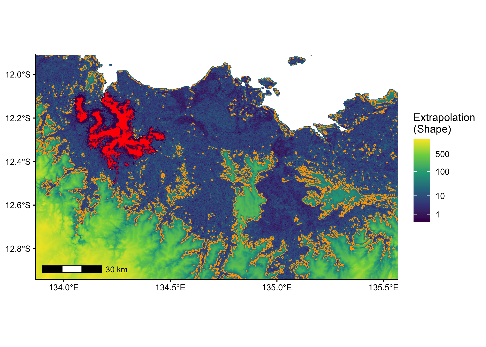
Code
Warning: The following aesthetics were dropped during statistical transformation: fill.
ℹ This can happen when ggplot fails to infer the correct grouping structure in
the data.
ℹ Did you forget to specify a `group` aesthetic or to convert a numerical
variable into a factor?`geom_raster()` only works with linear coordinate systems, not `coord_sf()`.
ℹ Falling back to drawing as `geom_rect()`.